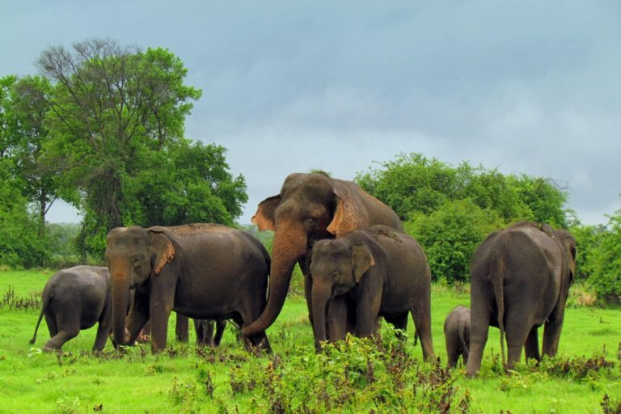
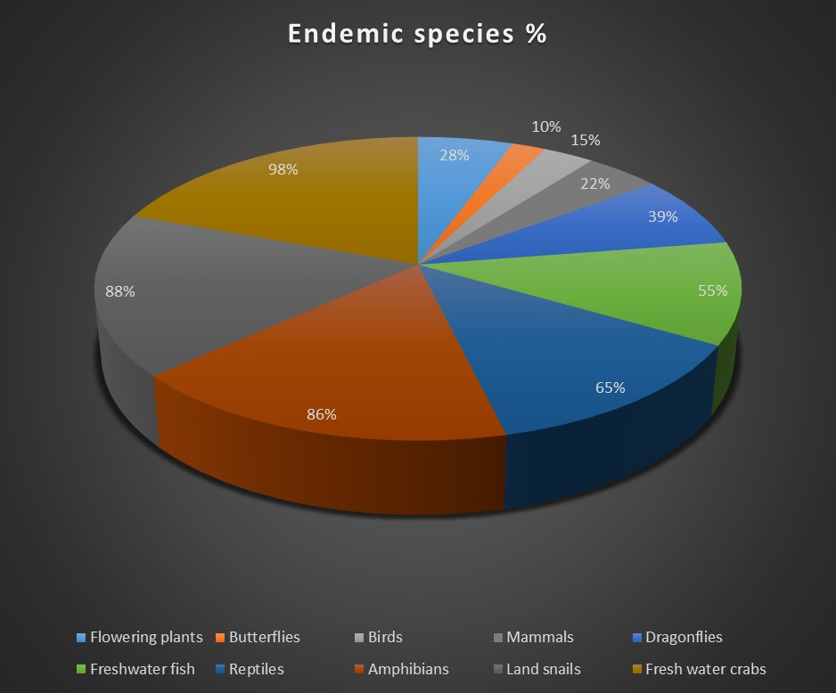
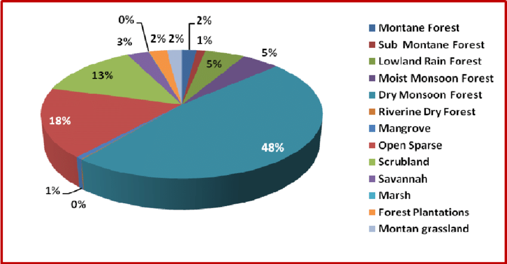
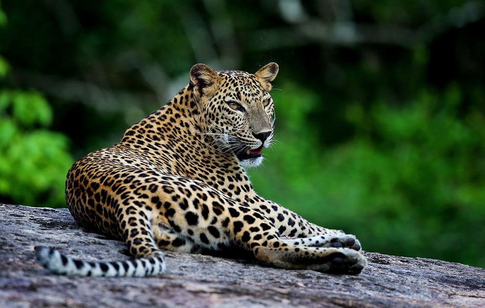
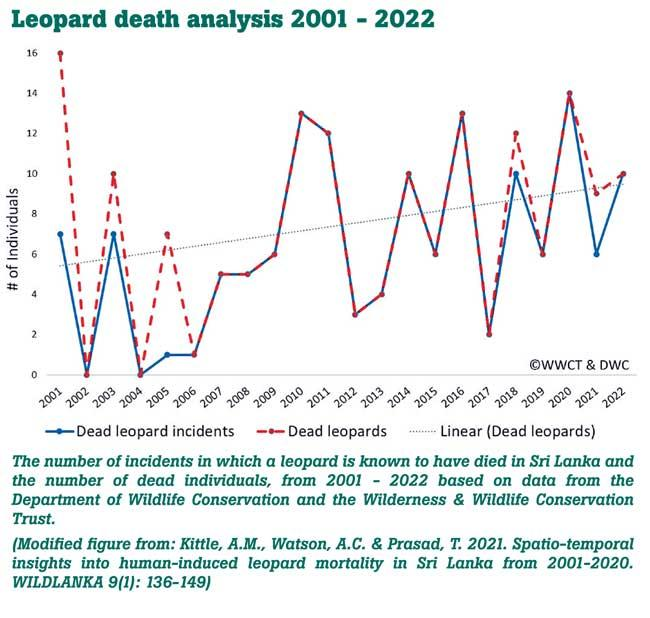
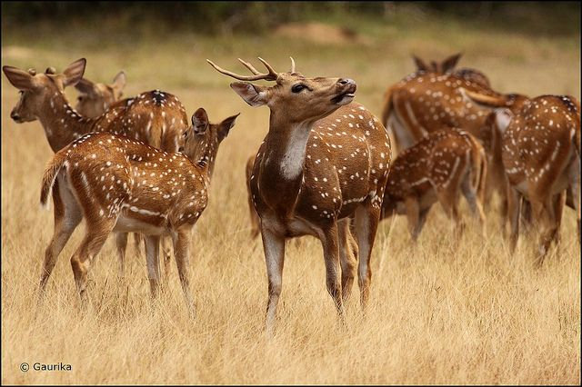
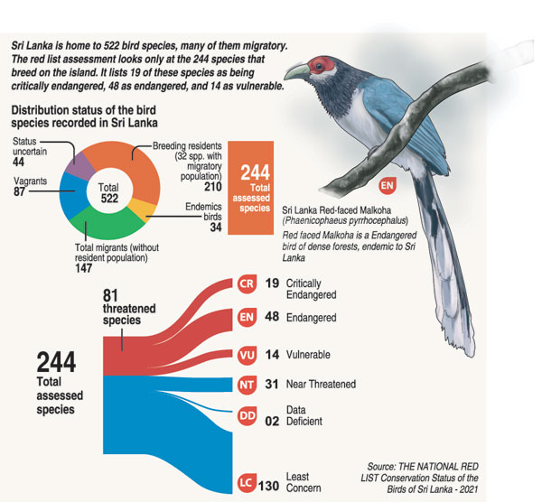

HOME

The homepage provides a comprehensive insight into the wildlife of Sri Lanka, showcasing its biodiversity and conservation efforts. Exploring various facets such as flora diversity, fauna diversity, and marine biodiversity, each section offers detailed descriptions, accompanied by captivating images and lists of key species. Within this exploration, it becomes evident that Sri Lanka boasts an exceptional biodiversity, encompassing a wide array of unique plant and animal species, contributing to its status as a biodiversity hotspot.
Below is a graph that illustrates the biodiversity of Sri Lanka.

INTRO

The Introduction Page offers an insightful overview of Sri Lanka's notable wildlife locations. It presents detailed descriptions and captivating imagery of key destinations such as the Sinharaja Forest Reserve, Knuckles Mountain Range, and Horton Plains National Park. Through engaging content and informative maps, visitors gain a glimpse into the unique ecosystems and diverse flora and fauna of these areas. Additionally, a table highlights featured animals, enriching the exploration experience and promoting conservation awareness.
The Graph below shows the forest types in Sri Lanka

DEPARTMENT

The Department of Wildlife Conservation webpage offers insights into Sri Lanka's governmental institution dedicated to preserving the nation's wildlife. It introduces the department's commitment to biodiversity preservation through research, community engagement, and law enforcement. The page explores protected areas like Udawalawe, Minneriya, and Bundala National Parks, highlighting unique ecosystems and conservation efforts. Additionally, it provides the department's location and encourages newsletter subscriptions for update
- Sri Lankan Department of Wildlife Conservation Introduction
- Protected Areas
- Udawalawe National Park
- Minneriya National Park
- Bundala National Park

LEOPARD

The "Sri Lankan Leopard" webpage provides insights into this endangered species, detailing its resilience amidst habitat loss and poaching. It highlights key features of Sri Lankan Leopards and presents notable venues where they roam, such as Yala National Park and Wilpattu National Park. The page discusses threats faced by these leopards, including habitat loss, poaching, and human-wildlife conflict, and outlines conservation efforts to address these challenges:
- Habitat protection and restoration programs
- Anti-poaching initiatives and law enforcement
- Community education and involvement in conservation
- Measures to reduce human-leopard conflict

ANIMALS

The webpage provides an exploration into the diverse wildlife of Sri Lanka, presenting a rich tapestry of animals inhabiting the island's various ecosystems. From the majestic Sri Lankan elephant to the elusive leopard and the colorful avian species, it highlights the unique fauna that calls Sri Lanka home. Additionally, it offers insights into the country's national parks, showcasing their significance in preserving biodiversity and providing immersive wildlife experiences for enthusiasts.
Discover the captivating wildlife of Sri Lanka, home to a diverse range of species. Here's a glimpse of some of the remarkable animals you can encounter:
- Sri Lankan Elephant
- Sri Lankan Leopard
- Sloth Bear
- Sri Lanka Junglefowl

WILPATTU NATIONAL PARK

Wilpattu National Park is Sri Lanka's largest and oldest national park, known for its natural lakes and diverse wildlife, including leopards, elephants, and sloth bears. It offers thrilling safaris and a chance to experience the untamed beauty of Sri Lanka's wilderness.
YALA NATIONAL PARK

Yala National Park, located in southeastern Sri Lanka, is famous for its dense leopard population and diverse ecosystems. It's one of the best places in the world for leopard sightings and is home to a variety of wildlife, including elephants, sloth bears, and numerous bird species. Yala offers exciting safaris and opportunities to explore Sri Lanka's natural heritage.